Figure 1: Nine Fields of View (FOVs) of a whole-transcriptome Pancreas dataset visualized with the napari-cosmx plugin. DAPI and PanCK are shown in blue and green, respectively. Endocrine cells in the Islets of Langerhans can be identified by their transcript abundance of marker genes (points). Red = GCG (alpha cells), orange = INS (beta cells), cyan = SST (delta cells).
1 Introduction
The AtoMx™ Spatial Informatics Portal (SIP) is an excellent solution for analyzing multi-omics spatial data generated on the CosMx™ Spatial Molecular Imager (SMI). It offers seamless integration of data analysis with a data viewer in an intuitive web-based interface.
For bespoke analyses, however, it can be useful to extract SMI image and transcript or protein data from the SIP. Version 1.3 of the SIP introduced new exporting abilities that allow raw data and processed data in a variety of formats (e.g., Seurat, tiledb, “flat files”) to be downloaded. Still, how do we actually view and interact with the images from these downloads?
This blog post is the first in our series on using our napari-cosmx plugin. Like other items in our CosMx Analysis Scratch Space, the napari-cosmx plugin is experimental so the usual caveats and license applies. Future posts will do deep-dives into using the napari-cosmx plugin. This post will show you how to:
Section 2.1 Install Napari and the napari-cosmx plugin
Section 2.2 Describe what our “napari-ready” data format is
Section 2.4 How to create a napari-ready slide from AtoMx raw data export
Section 2.5 Minimum example of how to view cell-level metadata
Note
napari-cosmx is actively and continuously under development in the RnD groups at NanoString. We do not (yet) have the source code for napari-cosmx opened-sourced. Please be aware that there may be bugs and that it has not gone through the regular level of quality and testing. Our goal here is to bring the capabilities of napari to CosMx users as fast as possible.
1.1 What is Napari?
Stepping back for a second. What exacty is Napari? Napari is an open-source Python project that runs a Qt-based desktop GUI for interactive visualization of scientific images. The application has layers of different types, similar to what you might find in application like Photoshop or Procreate.
1.2 What is the napari-cosmx plugin?
The napari-cosmx plugin enables viewing of data generated by the CosMx SMI platform in Napari. Tissue morphology layers generated by CosMx SMI are stored as zarr files and displayed as image layers and standard controls such as opacity, gamma, and contrast limits can be use to interact with the tissue. Protein results are also viewed as an image layer in Napari. For CosMx RNA experiments, the detected transcripts are viewed as a points layer in Napari. Cell segmentation results are displayed as an image layer of the cell boundaries. The cell shapes can also be colored by metadata such as cell type. Figure 2 shows some examples of these in an animated format.
Figure 2: Example animation made with napari-cosmx showing ligand-receptor interactions in a healthy prostate sample. Cell types fill in the cell boundaries. When cells are transparent, one can see more easily see the spatial location of S100A8 and S100A9 ligand RNA transcripts with the TLR4 receptor transcript. While animations are certainly not needed for all purposes, this one highlights that the plugin can color RNA transcripts (points layer), cell-level metadata like cell types (labels layer), and cell boundaries (image layer). It can also visualize IF image layers (not shown here; see Figure 1 for example of IF staining).
Beyond the basic interactivity and viewing of napari, other posts in this series will provide examples of tips and tricks as well as more advanced analysis. See the series topics for what’s coming ahead!
2 Using the napari-cosmx plugin
Note
While Napari and the napari-cosmx can be installed on many systems, CosMx data can be quite large. A slide with a large number of FOVs may very well exceed the capabilities of a standard laptop.
2.1 Installing napari-cosmx
The specific download instructions depend on your operating system (see tabs below) but the general procedure is the same: 1) installing Napari 0.4.17 and 2) installing the napari-cosmx plugin.
Note
The napari-cosmx plugin was developed with Napari 0.4.17. There are some breaking changes that we have noticed if using the plugin with newer version of Napari (e.g., 0.4.18). At the time of writing this post, please make sure to install version 0.4.17.
Depending on your browser and security settings you may get warnings when downloading or running some of the links below.
2.1.0.1 Part 1: Installing Napari
The Napari project contains platform-specific bundled apps for each release that don’t require you to first install a Python environment. You simply run the installer and a link will be added to your Start Menu as with a typical app installation. The napari-CosMx plugin currently expects Napari 0.4.17.
Go to the folder where the whl file is in your File Explorer and choose Copy as Path.
Now launch Napari from the Start menu in Windows.
Pro tip: If launching for the first time, the application may take a moment to appear. Avoid launching multiple instances.
In napari, open up the >_ button that is located on the bottom left (see Figure 4 for example).
Type pip install into the console (i.e., with a single space after the word ‘install’).
Paste the location of the whl file
Press enter to execute
You should receive a message in the console that several packages were successfully installed including the napari-cosmx package.
Close and re-start napari
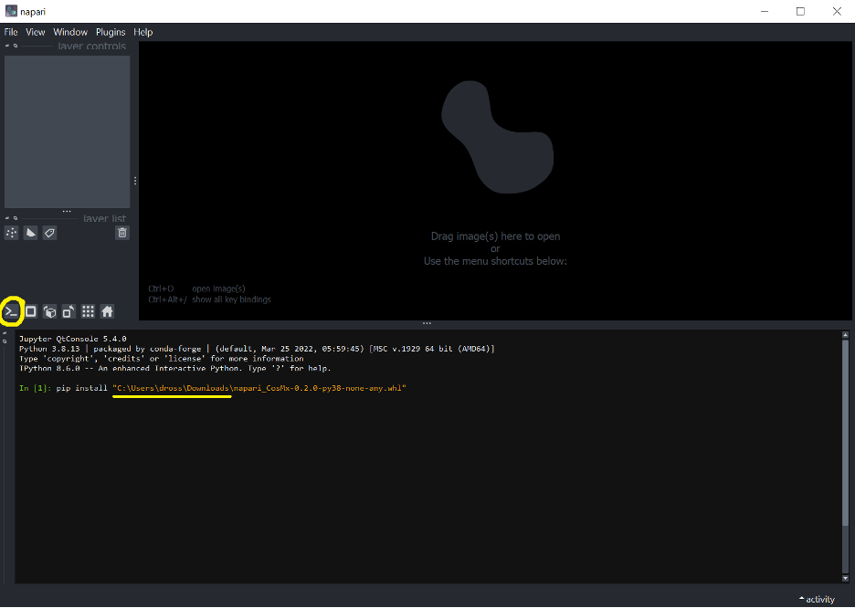
Figure 4: Example showing how to install the napari-cosmx file. Your file name and path will look different. Yellow circle shows the location of the >_ ipython prompt.
Note
Depending on your browser and security settings you may get warnings when downloading or running some of the links below.
2.1.0.3 Part 1: Installing Napari
Visit the Napari 0.4.17 release page. Scroll all the way to the bottom and expand the section that says “Assets” (Figure 5). Download the pkg file that is appropriate for your operating system (i.e., napari-0.4.17-macOS-x86_64.pkg for Mac). Open the downloaded file and install via the instructions on screen (you can accept the defaults). When finished, launch Napari via the Applications folder.
Pro tip: If launching for the first time, the application may take a moment to appear. Avoid launching multiple instances.
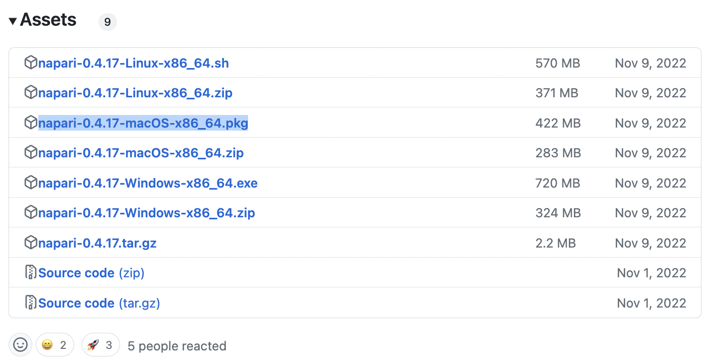
Figure 5: Screenshot of Napari packages. Blue highlighted package is appropriate for Mac. Other operating systems’ packages are also available but untested.
In Napari, open up the >_ button that is located on the bottom left (see Figure 6 for example).
Type pip install into the console (i.e., with a single space after the word ‘install’).
Paste the location of the whl file
Press enter to execute
You should receive a message in the console that several packages were successfully installed including the napari-cosmx package.
Close and re-start napari
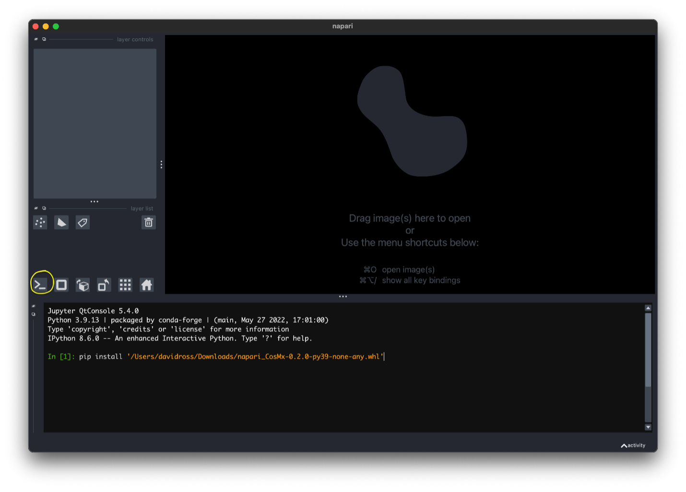
Figure 6: Example showing how to install the napari-cosmx file. Your file name and path will look different. Yellow circle shows the location of the >_ ipython prompt.
2.2 Napari-ready slide folder
The napari-cosmx plugin expects a slide that has been prepared using the stitching (Section 2.4) method within the plugin itself. If you do not already have a napari-ready slide, you can download a simple, single-FOV example that we have created here). This single-FOV dataset was derived from the mouse brain public dataset. The full data download is not needed for our current purposes but those interested in exploring the full data can download it here.
At the very minimum, the napari-ready slide folder contains two top-level elements:
images folder. Within the images folder, there are subfolders for each immunofluorescence channel and one folder for the cell boundaries (labels).
targets.hdf5 file that contains the RNA (or protein) targets.
Figure 7: Example layout of a napari-ready folder. In this example, the ‘parent folder’ (i.e., the folder you would drag and drop into Napari) is named single_fov_napari_example and contains the images folder with subfolders containing various zarr files within and the targets.hdf5 file.
If you would like to see the details of the zarr file structure for the images folder in our single-FOV example, expand the code chunk blow.
We can also create a file named _metadata.csv that can be used for cell-level labeling. For more information on that, please see Section 2.5.
2.3 Loading a slide into napari-cosmx
Note
You may have noticed that I put this section before the section on how to create (or ‘stitch’) napari-ready files. This is due to the current implementation of the napari-cosmx code base. Specifically, this is because the widget used for stitching is available once we launch the plugin. So in order to be able to stitch, we need to have some pre-existing slide to load into the plugin. There are advanced ways that we could get around this limitation but that’s an advanced topic for another day.
To launch and view CosMx data with the napari-cosmx plugin:
Navigate to a napari-ready slide folder. If you need a minimum example, see Section 2.2 above.
Open Napari from the Start Menu (Windows) or the Application folder (Mac).
Drag the parent folder of the slide into the the Napari application. If you are using the single-FOV example above, this would be the folder named single_fov_napari_example. Otherwise, the napari-ready folder is whichever folder contains images and targets.hdf5 (see Section 2.2).
Napari will ask if you would like to open via the napari-cosmx plugin or another method. Select the napari-cosmx plugin and press okay.
2.4 How to create slides from Raw data
At the time of writing, the process to create Napari ready files follows this framework:
Export Raw data from AtoMx SIP (v1.3+) (Section 2.4.1)
Use the stitch widget to create napari-ready slide from raw data (Section 2.4.3)
Note
One of the main advantages of AtoMx SIP is that the data are stored for you. However, napari-cosmx currently requires the raw data downloaded and stored locally. Raw data can be quite large (100s of GBs per slide). It is possible to store the data on a networked drive but we have noticed that stitching performance is slower, depending on your network speed. Storing the data on a high-capacity and fast I/O external hard drive may also be an option.
2.4.1 1. Export Raw Data
In AtoMx SIP, in the Study details panel on the upper left, click Export (Figure 8).
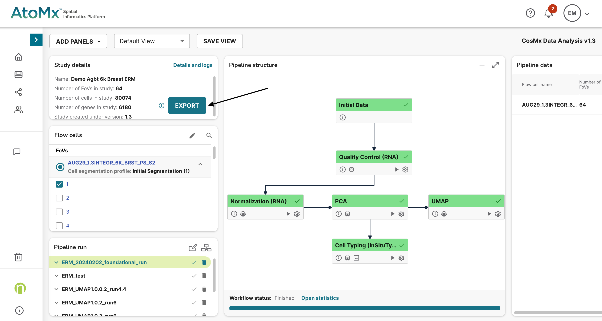
Figure 8: Click Export (available in AtoMx SIP version 1.3+).
Configure your export with the options indicated in Figure 9 and click EXPORT. If you would like to view metadata (optional). You can go ahead and download the Seurat data now or as a separate step (i.e., Seurat data is not needed for stitching napari files).
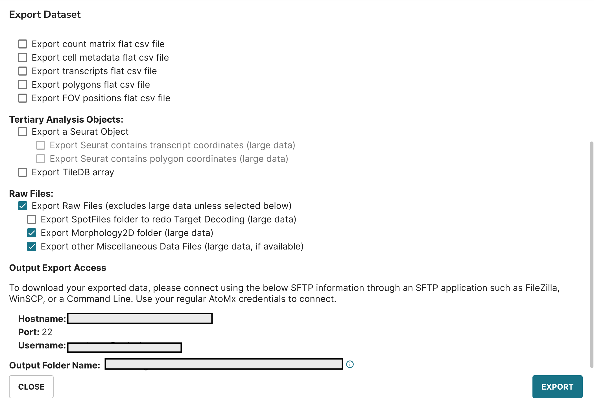
Figure 9: Example configuration for exporting. For more information on extracting cell-level metadata, see Section 2.5.
When the export is ready, download the data. You can do this over the sftp protocol in a variety of application. Here, I’m using Cyberduck but you can use other programs.
In Cyberduck, click Open Connection. In the dropdown menu, select SFTP and enter the URL, username, and your (AtoMx) password. Then click Connect. Example: Figure 10.
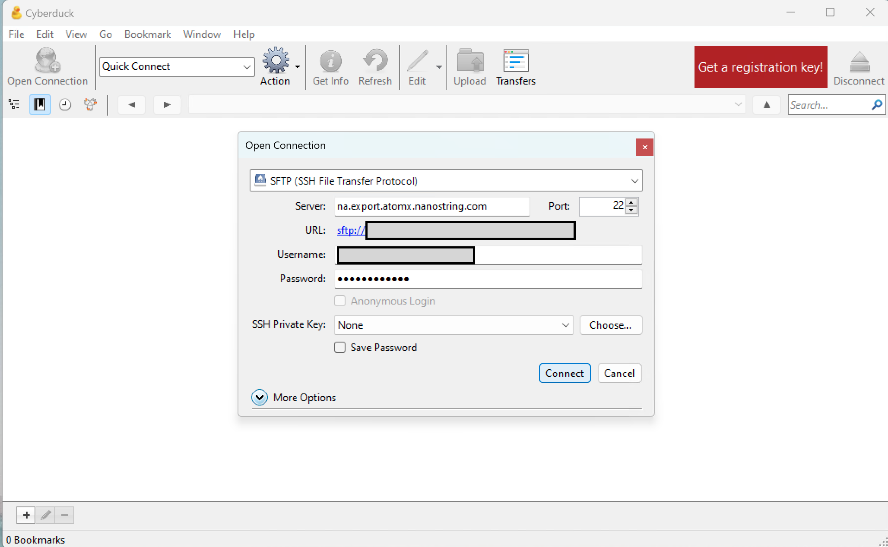
Figure 10: Example configuration for Cyberduck SFTP.
Once connected, find the relevant folder, right click, and select Download As... (Figure 11). Choose the location on your computer to store the data. You may be able to store it on a networked drive but this is currently untested.
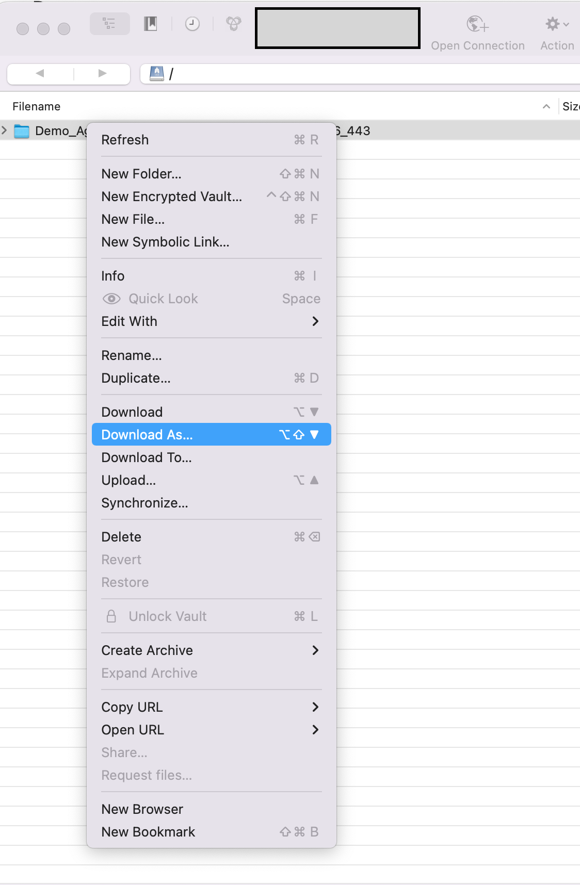
Figure 11: Download raw data somewhere on your desktop.
2.4.2 2. Launch napari-cosmx
In order to use the stitching widget in the plugin, we must first launch the plugin. Currently, the only way to do that is to load an existing napari-ready folder. This can be any Napari slide (e.g., a previous study or the single-FOV example described in Section 2.2).
2.4.3 3. Stitching images
Once napari-cosmx is launched, the stitching widget is located on the right-hand panel (Figure 12).
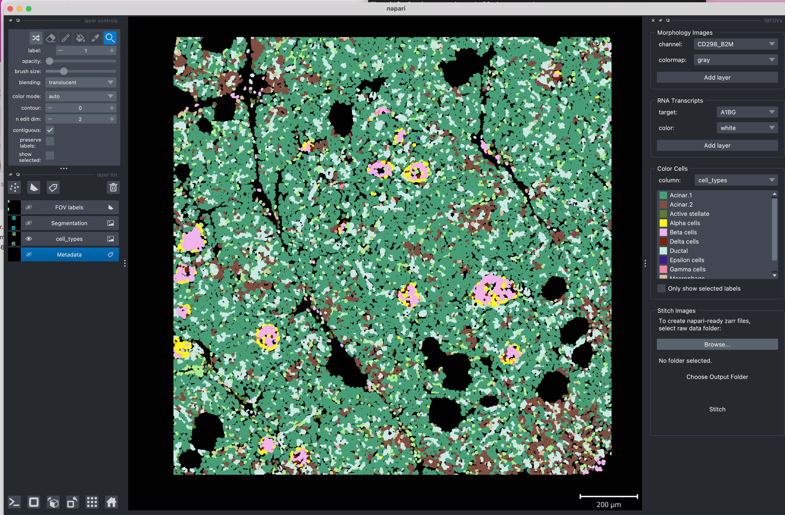
Figure 12: Example showing a launched napari-cosmx plugin with a possibly-unrelated slide. To stitch, a new slide, Click Browse... in the Stitch Images widget located on the right-hand side of Napari.
We need to tell napari-cosmx where the raw data that we exported are located locally. In the right-hand panel there is a Stitch Images widget. Click Browse... and navigate to the parent folder containing the slide’s raw data.
Your downloaded raw data folder name will be unique to your slide and you can rename it to whatever makes sense for your workflow. For this example, I renamed it raw_data (Figure 13). Click on the raw data folder and select Open. In the Stitch Images widget, you should see the path of the raw data folder printed. If an unexpected format was detected, there will be an error message (e.g., Figure 14).
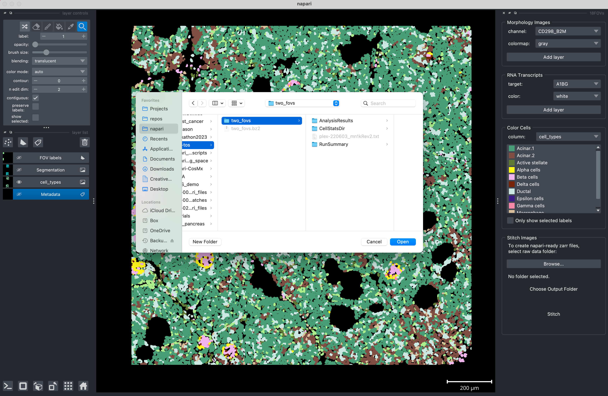
Figure 13: Browsing to the location of the raw data that you want to stitched.
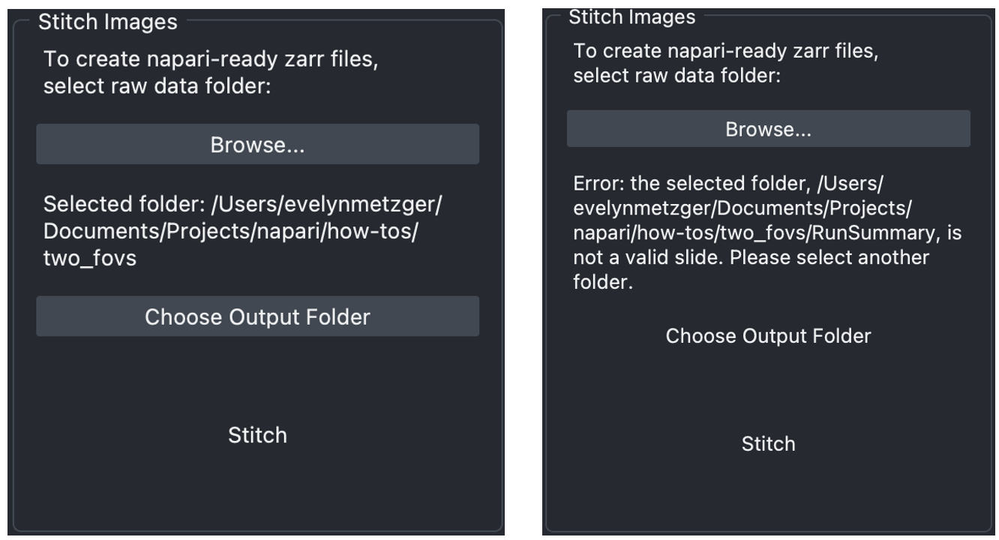
Figure 14: Stitching widget prints the path to the correctly formatted raw data (left) or provides an error message if not formatted correctly (right). Note that only the correctly formatted location can proceed to the next step (choosing otuput folder).
Next, select the location where you want the plugin to return the napari-ready files. It is recommended not to store it in the same location as the raw data. Here, I’m pointing it to a location adjacent to the raw data that I named stitched_example (Figure 15).
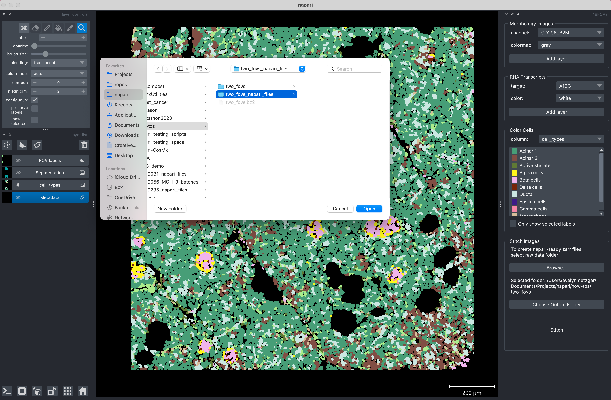
Figure 15: Select output folder.
Finally, click Stitch. Note: currently there is no refreshing or printing of messages. Please do not click Stitch more than once. You may see Napari become unresponsive, see the “spinning beach ball” (Mac), etc. Depending on the number of FOVs, computer configuration, and analyte type, this can take several minutes. Once complete, you should see messages that resemble that of Figure 16. If you see the last line See output folder for results, you successfully converted the raw data into napari-ready files!
To view the results, simply close napari, reopen it, and drag your newly created results into the application.
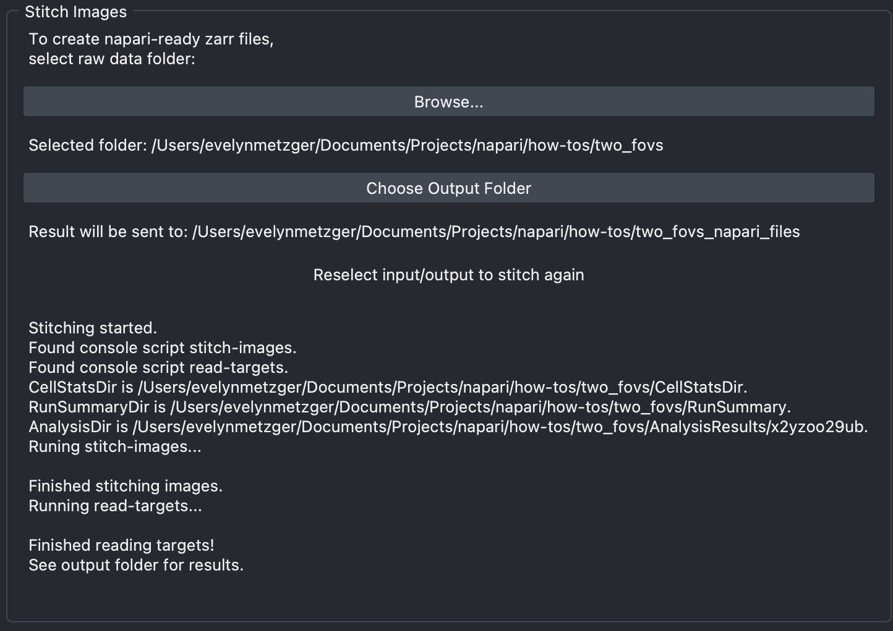
Figure 16: Messages from a successfully completed stitching run.
That’s it! To view the newly stitched slide, close Napari, re-open it, and drag the folder into Napari.
2.5 Adding and viewing metadata
While there will be dedicated posts that discuss tips and tricks for using the napari-cosmx plugin, here I’ll discuss one of the most powerful uses: viewing cell types.
While not needed for the basic stitching, the Seurat file that is downloaded from AtoMx SIP can contain important cell-level information. For example, if cell typing was performed in AtoMx, each cell will have a label with its cell type.
In this section, I’ll show you the basic principle for converting the meta data within the Seurat object into a csv file that can be understood by the napari-cosmx plugin. Users should have a basic understanding of R in order to use this feature. I’ll also need to switch our example dataset since the minimal single-FOV example dataset was from raw data and not analyzed in AtoMx so we don’t have any cell-level cell type information. Here, the specific column of interest will have the prefix RNA_nbclust and suffix clusters. In the code below, we’ll change that name to simply cell_types. We’ll also need a column named cell_ID in the metadata. We need to write the metadata columns to a file specifically named _metadata.csv and have that file located in the napari-ready folder.
Code
# This is R codelibrary(Seurat)library(plyr)library(dplyr)# sem_path will be wherever you downloaded your Seurat objectsem_path <-"/path/to/your/seuratObject.RDS"sem <-readRDS(sem_path)meta <- sem@meta.datameta <- meta %>%select(starts_with("RNA_nbclust")) %>%select(ends_with("clusters"))colnames(meta)[1] <-'cell_types'meta$cell_ID <-row.names(meta) # adds cell_ID columnrownames(meta) <-NULLmeta <- meta %>%relocate(cell_ID) # moves cell_ID to first column positionwrite.table(meta, file="/path/to/inside/napari-ready-folder/_metadata.csv", sep=",", col.names=TRUE, row.names=FALSE, quote=FALSE)
Now, when we drag and drop the napari-ready folder, the metadata that you extracted from Seurat will be available to view using the right-hand widget named Color Cells (Figure 17).
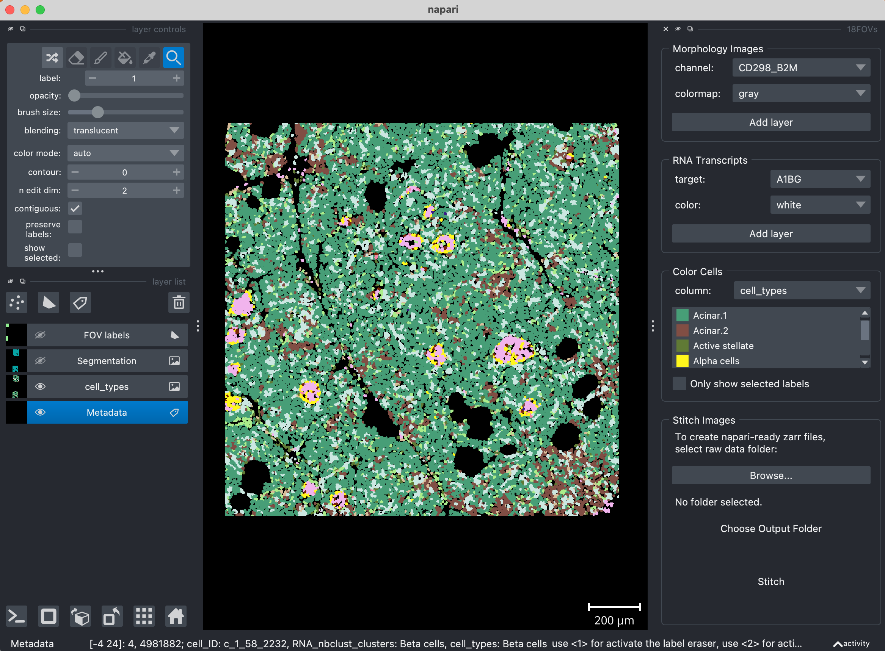
Figure 17: When metadata are available in the _metadata.csv file, it’s possible to color cells based on a cell-level metadata value (e.g., cell types).
3 Conclusion
In this post we introduced the napari-cosmx plugin, a tool that can be used to interact with exported CosMx SMI data from AtoMx SIP. Our focus was on installation and launching the application. In future posts we’ll do deep-dives on usage and share tips and tricks that we’ve learned along the way. If you would like to see a Napari topic discussed, please create an issue or feature request on github using the Napari series label.